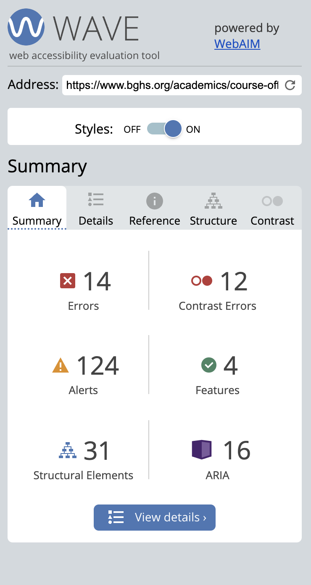

Part 1: Identifying Usability Problems
Picking a Web page
For this assignment, I chose my high school website. I decided to take this website since I have had many issues with its most recent redesign which was done 5 years ago. Specifically, the page I find has a bad workflow is the Course Offerings page. The website could be updated with a different syntax and more focus on UI/UX friendliness. Below is a screen capture of the webpage. Select the image to view the current page.

Finding Problems
Usability
- Webpage able to load all elements quickly
- Separated courses by department through a smooth dropdown that opens and closes
- Long scrolling actions if a dropdown is opened and not closed
- Course details generally very dense and hard to read at once in a row
- Text and headers are not equaivalent across page
- Font size consist across all devices (phone and table) and difficult to navigate
- Overall: okay usability, can be improved
Learnability
- User can find course if they know department, but cannot be assumed
- User cannot find specific course easily since need to scroll down
- Scrolling can take around ~20 seconds in longer department sections
- Scrolling cannot be learned easily, need to guess the exact location on page
- Overall: average learnability, scrolling must be improved
Memorability
- User can remember page once they leave with lack of complex functionality
- Distinct school colors on website and student/teacher photos
- No guarentee for quicker search on next webpage arrival due to long scrolling
- Overall: good memorability
Conceptual Model
- Users are prospective parents or students looking through course offerings
- Database to look up courses at the high school
- Sectioned into departments like a dictionary section
- Browsing similar to entreies in a magazine, except scrolling
- Suggests the user should scrolling and view courses, no need to come with a course in mind
- Overall: makes sense to user, but not necessarily easiest tool to use
Accessibility
In my findings, there were 14 errors, 12 contrast errors, 125 alerts, and 4 features. For the most part, I agree with the errors. Most of them include missing alternative text or having broken links. The larger problem is the contrast errors with some of the font colors on the website which should definitely be changed. There are some alerts which I think are not as much of an issue such as a missing heading where there is instead a picture. Overall, I do mostly agree with these problems and it provides good insights into what I must fix for this website redesign.
